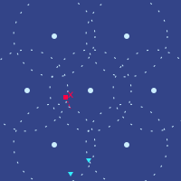
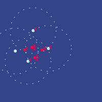

扬坐在出租车里，透过车窗向外看。他看到自由城惯常的那种建筑物大杂烩：有玻璃和钢的，有混凝土的，有石头的；有的高，有的矮；有的漂亮，有的难看。
出租车从一条高架路下穿过，他能看到路边堆着没清运的垃圾。刚过完高架路，出租车驶过左边的一个小公园，右边是一栋高大的工业建筑。那栋工业楼的外墙上正在放映一部带字幕的电影。扬又朝左边看，想弄清电影是从哪儿投出来的。就在出租车快要驶远、让他再也看不清之前，他找到了那台投影仪——藏在公园里的一张长椅底下。他心想，就算没有图谱资助、没有评则，也总有人愿意提供公共品。
整体看来一切如常——只是扬勉强察觉到，街上的人车往来似乎比平时少了些。
出租车从又一条高架路下穿过。到了另一侧，扬在某栋建筑的外墙上看到一则大幅广告。
在自由城中心区北缘，买下一间豪华庇护所房间。
地下10米，最高等级的物理、生物与信息过滤和隔绝。
只要325,000齐普币！
一分钟后，又一条广告：
适合普通人的庇护所，各种形状、各种尺寸。
起价只要50,000齐普币，支持按揭！
出租车继续向西，驶入了广告里说的那片区域。在这儿，扬注意到一种活动——在他看来，过去半年里它一直在稳步增加：修路。庇护所的工地他也见过不少，修路紧随其后——城北一带尤其多。
扬放在腿上的手持终端震了一下。
| 出租车费 | ||
|---|---|---|
| 3.69 | ||
| 9分钟 | 1.89 | |
| 5.65公里 | 1.26 | |
| 113 m/s Δv | 1.03 | |
| 1.50 | ||
| 1.00 | ||
| 2.25 | ||
| 12.52 | ||
“嘿，师傅？”扬问司机。
“什么事？”司机答道。
“你知道这回怎么会有这么多拥堵费吗？路面看着比平时空不少，通行费怎么会涨到那么高？”
“哦，是啊，凡是能涨的税和费他们都在涨。说是要给防务筹钱。”
“嗯？路费也涨？”
“还有别的什么费用涨到你头上了吗？”司机问。
“其实不是政府，”扬答道。“至少不是直接出手。不过，是那些庇护所。我在那儿听到了一些有意思的八卦。”
“什么八卦？”
“最好的庇护所原本属于几家防务公司。红郡被吞并后不久，他们凑到一起组了个卡特尔。卖掉了大量庇护所空间换钱，再用那笔钱把装甲和武器大规模升级了一遍。”
“嗯，全是私营公司？那大概算是人家的财产，人家的规矩。留给咱们穷人的庇护所空间，确实比他们干脆搞配给还少，可话说回来，人家也在出力。他们要是真拿这笔钱把咱们护住了，咱们打一开始就用不着庇护所的指望也更大。再说路上车少了，我开着也舒服。”
“话是这么说，可那是台面上的说法。自由城的经济哲学，也算是玩到极致了。不过我总觉得它没那么干净。政府好像专门挑那些能让庇护所进出更便利的地方修路。没有证据表明他们跟那些公司有串通——真有的话，合议庭会毫不留情地推翻——但我的理论是，这是一种追溯性回报。先造出预期：你若把私有财产用于公共福祉，政府就会在它做的公共工程上动手脚，让你日子好过些。这是绕开预算上限规则的一招——不直接掏钱，就把钱付给了人。”
“而你要是拒绝以公益精神使用自己的私有财产，那……要是事情真闹得够糟，下一步可能就是他们开始以‘维护’为由关掉一些路。不过话说回来，人总还能飞。”
“大梅港一直拒绝资助任何可能被看作跟北极作对的事，他们怕自己在北林的节点被关掉。自由城到底能不能守住‘自由’，大概就得在那儿见分晓了。”
“也看它能不能自保。”
司机和扬沉默了一分钟。没多久，出租车减速停下。扬朝窗外一看——自由城经济研究所到了。
“谢了师傅，祝你今天顺利！”
“你也是，老板。”司机答道。
扬推开车门，下了出租车。
扬刷过自由城经济研究所的闸机，朝餐厅走去。
走了一分钟，他到了。他看见一张熟脸：乌塔库。
“乌塔库！你还在这儿，真没想到。”
“我爸妈让我回来的。他们觉得自由城比其他联合城邦更把防务当回事，所以在这儿比在贝尔帕基安全。”
“你自己信吗？”
“最近有些动作，想在诸阿克之间搞一套统一的防御网。要是能成，我会更乐观些。可就算成了，我也担心那更多是做戏，没什么实质。”
“自由城做过什么实质的事吗？”
“嗯，大公司都在给自己所有财产上保险，红郡被吞并时费率涨到三倍，北林之后又翻了一倍。后来那些公司公布了近期的防务计划，费率好像又降了四分之一。”
“所以……市场的激励好像还真在起作用。”
“你知道吗，我最近一直在跟泽国的泽聊，看他们怎么那么快就让所有人开始在意隐私，现在又在推生物安全——室内平均二氧化碳浓度一个月里降了一百多点。协调这一切的，是他们当初搞出来的那套机器，据说最初是为了改良他们的语言——顺带还要给我们一套合理得多的距离和时间单位体系。”
“我一直有种感觉：只要人们接受并且相信，几乎任何制度都能运转得不错。”
“自由城的人真的那么信经济自由吗？经济研究所的人当然都信，可普通人呢？”
“你熟悉联合城邦一百年前的早期历史吗？”
“模模糊糊。我知道打过几场仗，既有城邦之间的，也有跟北极打的。”
“可你知道那些仗最后是怎么收场的吗？”
“后来这片大陆上的军队走到了一起，合作多了起来，北极对泽国的攻势最后能被打退，很大程度就靠这个。”
“危机当头，团结起来容易。难的是在太平年月、无聊年月里还把这股气守住——等到开国那一代人凋零，儿孙们需要一个对手，又很难忍住不开始互相撕咬。”
“那后来呢？我猜是共治制度？”
“那只是一部分。每座城市把议会1%的投票权让给邻城——不足以威胁城市自身的独立和独特文化，但足以让后来的政客不敢把周边这片大陆完全抛在脑后。”
“不过他们还做了另一件事来保住各自独特的文化。有一段时期，他们补贴人们互换住房和公民身份。在别的城市更觉自在的人，可以轻松搬过去，把效忠对象改成自己的新家。”
“自由城政府做了一个决定。他们通过了一部新宪法——就是今天还在用的这部——把政府监管和征税的权力压到最低限度。然后他们表态：这就是我们的立场。你要是怕它，就去别的城市；你要是喜欢它，不管你来自哪座城，我们都欢迎你。他们甚至还搞了一次性格测试，不告诉人们是干什么用的，等结果出来后，凡是政府认为‘契合’的，补贴就发得更多。”
“哇，这我真不知道。”
“其实阿图里亚做过类似的事，方向有点相反。他们把自身的价值说成和平安宁、研究与学问，然后按尽责性和测验分数来筛人。今天他们整个社会有点像一所巨型大学。你要是太跟这套系统对着干，系统就会越来越狠地把你往外推，最后你只能走人，去自由城。可你要是认可这套系统，就能在里面学到很多，也玩得开心。他们的科学研究做得相当不错，基础设施也可靠。”
“最强的正当性，来自人们自愿认同一个理念——签下那份表格，清楚知道自己要接下什么、要放弃什么。”
“这么说，挑选本身也很重要。不同的风格适合不同的人。也许一个由阿图里亚人组成的自由城会是一场灾难，反过来也一样。”
“当然，如今已经过了好几代，很多人就是在这儿出生的，跟别处的人一样。但至少到现在，自由城撑住了。”
“你觉得有些人天生就比别人更爱自由吗？当年自由城招到了很多这样的人，这些基因就传了下来？”
“这儿的人时不时会提起这种说法。我觉得不太可能。我为了到这儿付的那些拥堵费、过的那些闸机——我很难相信存在一种基因，会把这一切都解读成‘自由’。你得受过相当深的教育，才能明白它为什么是自由的——明白这一切都属于一个市场，每个人、每个机构都按自己认为合适的方式配置自己的私有财产；明白这些付费让人们能够诚实地自我报告，他们是不是真把某样东西看得比提供它所耗费的资源更重；也明白这比政府自行判定哪些东西是浪费、然后一禁了之，要更好、更文明。”
“我觉得里头有个最核心的东西，连中世纪的人都能懂。我不烦你，你也别烦我。我们都只是在过自己的日子，能互相帮一把当然好，但不能因此挤掉彼此清静过日子的空间。你得不到大野地里那种采集者的自由，在城市里更没有，但在你自己的格子里，你就是主人。”
“至少，自由城给我的感觉一直是这样。”
“不过……我确实很喜欢这儿的经济学家。嗯，整个智识氛围都喜欢。我喜欢你可以坦坦荡荡地提基因那套东西，就算别人不同意，也不像在贝尔帕基，他们会立刻觉得你准是北极人还是什么。”
“换个话题。我当然知道他们为什么不会跟我们俩任何一个人说，可我还是好奇这些防务公司在干什么。他们认为的威胁模型是什么？跟红郡、北林一样的入侵？可要是我们抵抗得更狠，会怎么样？他们又打算怎么反击？”
“哎，你问得巧。我还真知道些八卦，不过……这是军事，我恐怕没有权限告诉你。”
“嗯，你居然能混进那种圈子，我倒挺意外。他们是看中你作为经济学家的想法，想知道怎么给防务筹更多钱？”
扬叹了口气。“很遗憾，我真的不能告诉你。言论自由在很多事上都很好，但……不包括军事机密。”
扬点了一份素菜和一杯茶，留在餐厅区上网查资料，想更确切地搞清乌塔库问的那个问题：自由城还有哪些办法能为防务筹到更多钱。他拿出一台电脑，做了个表，用三栏给不同选项打分：能筹到多少钱、会造成多少经济附带损害、以及有多大风险让自由城变得不那么……自由。
一个长时后，扬的手表震了。是泽，想通话。
扬拿起电脑和水杯，挪到附近的一个通话亭。
“怎么了，泽？”
“上个月你帮我牵线认识防务公司那事，再次谢谢你。那边还真有些有意思的新进展！”
“哎，我只是把你介绍给了经济研究所所长，跟公司搭上线是他干的。”
“什么进展？”
“先说个情况。你知道泽国人在防务公司帮忙下在干什么吗？”
“不知道。”
“他们一直在红郡猎杀北极无人机。”
“要是你能说的话……多讲点？”
“要不我直接给你看？”
扬的电脑震了一下，他看见一个文件在下载。那是阅后即焚文件。扬要是想，当然可以偷偷通过操作系统把它存下来，或者用另一台设备对着屏幕拍照。但按默认设置，文件一旦打开就只能查看五分钟，不能复制，到点自行删除。礼貌起见，不该去动这些默认设置。
扬点开文件，弹出一个画面。

“我这是在看什么？”
“就在我们说话的这会儿，这事正在发生。这是我们在红郡对一架北极地面无人机的秘密杀伤链。”
“红色方块是敌人。蓝色圆圈是我们自己的七架无人机，摆成了一个六边形。它们的任务是干扰通信。现在它们在休眠，等北极那架无人机完全进到圈里。”
“那接下来呢？”
“啊，那咱们一起看吧。”
大约十嘀嗒后，扬的屏幕上又出现一个阅后即焚文件。
“再等一会儿。”
“我很期待。”
“然后……开拍。”

“看到了吗？”
“嗯。”
“干扰无人机正在干扰。红叉表示目标被命中。按计划是两次命中：一次打它的主天线，另一次打它的支腿，防止它逃出干扰区。蓝色三角形是我们的两架攻击无人机。”
对话停了大约二十嘀嗒。
“还没死？怎么这么久？”
“我们那些无人机——就是三角形——其实并不是要杀死它。要真想杀，一开始直接下重手就行了。”
“那它们在干什么？”
“它们在跳舞。”
“跳舞？”
“它们的目标是尽可能久地活下来，用尽各种花招躲过击杀，最好还能被认成北极的无人机，甚至认成一只动物，直到那架目标快要逃出陷阱时才动手。”
“这就是我们的目标。拿北极无人机当靶子练怎么杀它们，很费钱。但拿北极无人机当陪练，练怎么在它们手里活下来，这个我们做得到，基本上只要那两个三角形还有一个活着，就能一直练。之后六边形里的七架无人机再收尾，把目标的电路烧穿，确保北极人自己也拿不到训练数据。”
“等等……”
“怎么了？”
“我们有麻烦了。”
“北极增援？你现在要接管，亲自把无人机开向胜利？”
“对，我正打算这么干。先让那两架受了伤但还活着的干扰无人机装死，把攻击者引到中心，干扰无人机重新启动，再合围，然后做掉它。”
“你干你的，不用给我实况解说。”
“我是在跟 AI 说话，顺便让你听着。”
“圆圈们，现在把西北方那个方块解决掉。目标：通信和存储全部干掉。”
“除了左边和左上，其余干扰全部关闭。”
“时机合适时，重新合围，重启干扰，发动打击。把突然性做到最大。”
“不——”
“什——”
扬话说到一半停住了，想起自己不该分散泽的注意力。
“它们开始干扰了，我掉线了。”
“现在没我什么事了。就是我们这边的 AI 加人，对北极人那边的 AI 加人。要是我们的干扰起了作用，就只剩我们的 AI 对他们的 AI。”
两人默默等着。
十嘀嗒。
二十嘀嗒。
三十嘀嗒。
终于，扬的电脑上下载图标又亮了。

“真的好险。”
“哇。”
“我们这边只剩一架完好的无人机了。最后一步，它得走一圈，把场上所有无人机的芯片和存储全部打掉——先收拾北极的，再收拾我们自己的，以防万一。它得赶在更多北极无人机过来之前做完。”
“受损的那些能帮忙吗？”
“它们动不了。还能攻击，但要彻底干掉芯片和存储，最好凑到十厘米以内。”
“就算这样，也没法真正确保北极人捞不回训练数据。只能往好处想。”
“好……我把指令给了，现在只能看着。”
“我挺好奇。你们连进红郡的网络是怎么运作的？”
“啊，那是我们另一个大项目。现在的问题是，北极人把所有没留后门的电子设备都收缴了。还剩下不少手表、手持终端和算力盒藏在各处，可只要哪台设备试图往外发东西，北极人就能查出来。所以我们的办法是隐写术。”
“两个人假装在打语音或视频通话。通话进行时，那台没留后门的设备就放在旁边，轻轻放着一段音频。这段音频流听起来是随机的——里面其实是被纠删码包裹的加密数据，抗噪能力很强——但我们用了之前跟你讲过的处理健康数据的同一套技巧，把能藏的数据量做到最大，好让任何监听这通电话的人或机器人都看不出有什么异常。”
“其中一个……你们还有别的大项目吗？”
“嗯，下一步是，我们想真的绑架一架北极无人机，带回泽国分析。”
“哇。”
“其实，这事我还得再请你帮一次忙。”
“那你需要什么？”
“我想让你再帮我引荐一家防务公司。最好别通过研究所所长，换个路子。”
“为什么？”
“研究所所长引荐的那家公司海上业务做得好，我想找另外一家，更擅长空中业务的。”
“再说，拜托，这可是自由城，这儿就是个市场。你得多找几家，货比三家，才能保证自己不被坑。”
Jahn, sitting in a taxi, looked out through the window. He saw Freetown's usual chaotic mixture of buildings: some glass and steel, some concrete, some stone, some tall, some short, some beautiful, some ugly.
The taxi passed under a highway, and he could see piles of uncollected garbage on the sides of the road. Almost immediately after the highway, the taxi passed by a small park to the left, and a tall industrial building on the right. A movie with subtitles was playing, projected onto the industrial building's wall. Jahn looked again to the left, to see where the movie was projected from. Just before the taxi moved too far away for Jahn to be able to see, he found the projector, hidden under a bench in the park. Even without Graph Funding or rubrics, he thought, some people will always provide public goods.
On the whole, everything seemed normal - though Jahn could just barely notice that the amount of activity on the streets seemed to be lower than usual.
The taxi passed under another highway. On the other side, on the side of one of the buildings, Jahn noticed a large advertisement.
Buy a luxurious room in a shelter, right on the northern edge of central Freetown.
10 meters underground, maximum-grade physical, bio and info filtration and insulation.
Only 325,000 zipcoins!
A minute later, another advertisement:
Shelters for the common man, in all shapes and sizes.
Prices start at only 50,000 zipcoins, mortgage plans available!
As the taxi continued west, it entered the region that the advertisement was talking about. Here, Jahn saw a type of activity that, to him, seemed to have been steadily increasing for the past six months: construction of roads. Jahn had also seen many shelters being constructed, but roads were a close second - particularly on the northern side of the town.
Jahn's hand device buzzed in his lap.
| Taxi fare | ||
|---|---|---|
| 3.69 | ||
| 9 min | 1.89 | |
| 5.65 km | 1.26 | |
| 113 m/s Δv | 1.03 | |
| 1.50 | ||
| 1.00 | ||
| 2.25 | ||
| 12.52 | ||
"Hey, Chief?", Jahn asked the driver.
"What is it?", the driver replied.
"Do you know why there's so many congestion charges this time? The road seems quite a bit less congested than usual, why would the tolls be going that high?"
"Ah yeah, they're bumping up every tax and toll they can. Funding defense, they say."
"Huh, the roads too?"
"Are they bumping up any other fees on you?", the driver asked.
"Actually not the government", Jahn replied. "At least, not directly. But, the shelters. I heard some interesting gossip there."
"And what is that?"
"The best shelters were originally owned by a few defense companies. Soon after Redshire got annexed, they got together and formed a cartel. Sold off a lot of the shelter space for money, and used that to modernize their armor and weapons a bunch."
"Huh, all private companies? I guess that's their property, their rules. Less shelter space left for us poor folks than if they just rationed it, but hey, they are trying. And if they use that money to defend us well, less chance we'll end up needing any shelters in the first place. And with fewer cars on the road, I'm enjoying the roads more too."
"Well, yes that's the polite story. Freetown's economic philosophy at its finest. But I'm getting the feeling it's not quite that clean. The government seems to be making a special effort to build roads in exactly those places that make it easier to get to and from the shelters. There's no evidence of any collusion between them and the companies - that would get knocked down hard by the courts - but my theory is that it's a sort of retroactive reward. Create the expectation that if you use your private property for the public good, then the government will twist the public work that it does in order to make life easier for you. It's a trick to work around the maximum budget rule - pay people without actually directly paying them."
"And if you refuse to use your private property in public-spirited ways, well... if things get really bad the next step might be that they'll start closing some roads for 'maintenance'. Though I guess people can always fly."
"The Greater Plum Harbor has been refusing to fund anything that could be seen as going against the Arctics, they're scared that their node in Northglade might get shut down. I guess that's where we'll find out how good Freetown is at staying 'free'."
"And at defending itself."
The driver and Jahn stayed silent for a minute. Soon, the taxi slowed to a halt. Jahn looked outside the window. He had arrived at the Freetown Economics Institute.
"Thank you Chief, and have a good day!"
"You too, boss", the driver replied.
Jahn opened the door, and got out of the taxi.
Jahn passed through the turnstile in the Freetown Economics Institute, and walked toward the restaurant.
After a minute of walking, he arrived. He saw a familiar face: Utaku.
"Utaku! Surprised to see you still here."
"My parents told me to come back. They think Freetown is taking defense more seriously than the other United Cities, so it's safer than Belpaki here."
"Do you think that?"
"There have been some moves recently to create a unified defense grid between the aks. I'll be more optimistic if that goes through. But even then, I worry it's more theater than anything substantive."
"Has Freetown been doing anything substantive?"
"Well the big corps are paying insurance on all their property, the rates tripled when Redshire was annexed, and doubled again after Northglade. And then apparently the rates dropped back down by a quarter when the corps announced their recent defense packages."
"So ... somehow the market incentives seem to be working."
"You know, I've been talking to Zei from Dzego lately, and learning how quickly they've gotten everyone to start caring about privacy, now about bio safety, average indoor CO2 levels dropped by over a hundred points within a month. All coordinated by machinery that they originally created, supposedly, to upgrade their language - and to give us a much more sensible distance and time system."
"I've been getting this feeling that maybe almost any system can work well if people accept it and believe in it."
"Do people in Freetown believe strongly in economic freedom? Everyone in the Economics Institute does, obviously, but what about regular people?"
"Are you familiar with the early history of the United Cities, a hundred years ago?"
"Vaguely. I know there were some wars, both between some of the cities and against the Arctics."
"But do you know how those wars got resolved?"
"Eventually the armies of this continent came together and cooperated more, and that was a big part of why the Arctic offensive against Dzego was finally stopped."
"Coming together in a crisis is easy. What's hard is keeping that spirit together through the easy times, the boring times, the times when the founding generation dies out and the kids and the grandkids need someone to fight against and have a hard time resisting the urge to start turning on each other."
"So what happened? The co-governance system, I'm guessing?"
"That's one part of it. Each city gave a percent of the votes in its parliament to its neighbors - not enough to threaten the cities' independence and their unique cultures, but enough that future politicians would not have an incentive to ignore their surrounding continent completely."
"But also, they did another thing to preserve unique cultures. They had a period during which they subsidized people swapping homes and citizenships. People who felt more at home in another city were able to move easily and change their allegiance to their new home."
"The government of Freetown made a decision. They passed a new constitution, the one we still have today, which limited the government's power to regulate and tax anything down to a bare minimum. And then they said: this is what we are about. If you are scared of it, go to another city, but if you like it, no matter which city you're from, we welcome you. They even did a personality test without telling people what it's for, and then gave bigger subsidies to people who got what the government thought was a compatible result."
"Wow, I did not know that."
"Actually Arturia did a similar thing, in a somewhat opposite direction. They described their values as being about peace and quiet, research and learning, and they filtered by conscientiousness and test scores. Today, their whole society is sort of like a big university. If you go against the system too much, you get pushed harder and harder to leave and go to Freetown. But if you're fine with the system, you can learn a lot and have a lot of fun inside it. They actually do quite a lot of good science and have reliable infrastructure."
"The strongest legitimacy comes from people buying in to an idea voluntarily - signing the form, knowing exactly what they are getting themselves into and what they are giving up."
"That sounds like selection matters too. Different styles work for different people. Maybe a Freetown made out of people from Arturia would be a disaster, and same with the reverse."
"Of course, now we're several generations into people being just born here, like people get born anywhere else. But for now, Freetown has held."
"Do you think some people are ... genetically more freedom-loving than others? And Freetown got a lot of those people back then, and those genes got passed down?"
"People here bring that idea up from time to time. To me it feels unlikely. All the congestion tolls that I paid to get here, all the turnstiles, I somehow doubt that there can exist a gene that would register all that as being "free". You need to have a pretty deep education to understand how it's free - how it's all part of a market, each person and institution allocating their private property as they see fit, and how all these payments give people the ability to honestly self-report whether or not they truly value something more than the resources that it costs to make it available for them, and how that's better and more civilized than the government just deciding what things it thinks are wasteful and banning them."
"I think there might be a core that even someone from the medieval era would understand. I don't bother you, you don't bother me. We're all each just trying to live our own lives, if we can help each other that's great, but not at the expense of leaving each other space to be in peace. You don't get the forager freedom of the great outdoors, especially not in the city, but within your own box you are the master."
"At least, that's what Freetown always feels like to me."
"Although ... I do love the economists here. Well, the intellectual culture in general. I like that you can honestly bring up the genetics stuff, and even if people disagree, it's not like Belpaki where they just immediately think you must be an Arctic or something."
"Changing the subject a bit, of course I know why they would never tell either of us, but I am curious what these defense companies are up to. What do they think the threat model is? Same type of invasion as Redshire and Northglade? But what happens if we resist harder? And how are they going to fight back?"
"Well, funny you ask. I actually do know some gossip, although ... this is military, I don't think I'm allowed to tell you."
"Huh, I'm surprised you got into those circles at all. Were they interested in your thoughts as an economist on how to raise more funding for defense?"
Jahn sighed. "Unfortunately, I really can't tell you. Freedom of speech is great for many things, but ... not for military secrets."
Jahn ordered a dish with vegetables and a tea, and stayed in the restaurant area studying the internet to better understand exactly the question Utaku had asked: what options Freetown still had to raise more funding for defense. He took out a computer, and made a table, scoring different options in three columns: how much money it could raise, how much economic collateral damage it would cause, and how much it risked making Freetown less ... free.
A longhour later, Jahn's watch buzzed. It was Zei, asking for a call.
Jahn picked up his computer and his glass of water, and moved over to a nearby calling booth.
"What's up, Zei?"
"Thank you again for that connection you made with the defense companies last month. I actually have some interesting updates there!"
"Hey, I only connected you to the Economics Institute director, the connection to the companies was his doing."
"But what is it?"
"Well, first let me give you a status update. Do you know what the Dzego folks have been doing with the defense companies' help?"
"I do not."
"They've been hunting down Arctic drones in Redshire."
"If you're allowed to ... tell me more?"
"How about I show you more?"
Jahn's computer buzzed, and he saw a file download. It was a view-once file. If Jahn wanted, he could of course save it clandestinely through the operating system, or just take a picture of the screen with another device. But by default, once opened, the file would stay viewable for five minutes, cannot be copied, and would self-delete at the end. Politeness dictated not interfering with these defaults.
Jahn clicked on the file, and a view opened up.
"What am I looking at here?"
"This is happening right now as we speak. It's our clandestine kill chain on an Arctic ground drone in Redshire."
"The red square is the enemy. The blue circles are seven of our own drones, that we arranged in a hexagon. Their role is to jam communications. Right now, they are dormant, waiting for the Arctic drone to get fully inside."
"So what happens next?"
"Ah, well let's find out together."
About ten ticks later, another view-once file appeared on Jahn's screen.
"Just waiting a little bit longer."
"I'm excited."
"And ... action."
"Do you see it?"
"Yep."
"The jammer drones are jamming. The red X signifies that there was a hit on the target. It's supposed to be two hits: one on its main antenna, and the other on its legs, to prevent it from leaving the jamming area. And the blue triangles are our two attack drones."
The conversation paused for about twenty ticks.
"Still not dead? What's taking so long?"
"Our drones, the triangles, are not actually trying to make a kill - if we wanted to do that, we could have just done that with a bigger first strike."
"So what are they doing?"
"They are dancing."
"Dancing?"
"Their goal is to survive as long as possible, trying any kind of trick to avoid getting killed, ideally get mistaken for an Arctic drone or even an animal, and eventually only kill when the target is too close to escaping the trap."
"That's our goal. Using Arctic drones as target practice to improve our ability to kill them is expensive. But using Arctic drones as practice to improve our ability to survive them, that we can do, for basically as long as either of the triangles is still alive. Then the seven drones in the hexagon can finish the kill, and make sure to fry the target's circuits so the Arctics don't get any training data themselves."
"Wait ..."
"What's the matter?"
"We have a problem."
"Arctic reinforcements? Are you going to take over and pilot your drones to victory now?"
"Yep, that's exactly what I'm doing. Temporarily have the two damaged-but-alive jammers play dead, lure the attackers to center, jammers reactivate, reform a circle, and then make a kill."
"Do your thing, no need to give me a play by play."
"I'm talking to the AI and letting you listen."
"Circles, finish the northwest square now. Goal: all comms and memory dead."
"Deactivate all jamming except left and top left."
"When it makes sense, reform the circle, reactivate jamming and strike. Maximize surprise."
"No-"
"Wha-"
Jahn stopped mid-word, remembering that he was not supposed to distract Zei.
"They started jamming, I got disconnected."
"Nothing for me to do now. It's just our AI against the Arctics, AI plus human. And if our jamming works, our AI against theirs."
They both waited silently.
Ten ticks.
Twenty ticks.
Thirty ticks.
Finally, the download icon turned on again on Jahn's computer.
"That was really close."
"Wow."
"Only one undamaged drone on our side. Last step is that it will walk around and chip and memory-kill all the drones, first the Arctics and then the rest of our own just in case. It needs to do that before more Arctic drones come."
"Can the damaged ones help?"
"They can't move. They can still attack, but proper chip and memory-killing is best done from ten centimeters away."
"Even then we can't actually be certain that the Arctics won't be able to salvage training data. We can just hope for the best."
"Okay... I gave it the instructions, now I'm just watching."
"I am curious. How does your internet link into Redshire work?"
"Ah, that's one of our other big projects. The problem now is that the Arctics have confiscated all the un-backdoored electronics. There's still many watches, hand devices and compute boxes left hidden in various places, but the Arctics will be able to tell if any device tries to transmit things. So what we do is steganography."
"Two people pretend to have a voice or video call. While the call is happening, the un-backdoored device is sitting nearby, and it's softly playing audio. That audio stream sounds random - it's representing encrypted data wrapped in an erasure code that's highly noise-tolerant - but we use the same tricks I told you before with the health data to maximize how much data we can hide, so that it appears to anyone or any bot spying on the call that there's nothing abnormal."
"One of ... do you have more big projects?"
"Well, the next step is that we want to actually kidnap an Arctic drone and bring it back to Dzego for analysis."
"Wow."
"Actually, that's what I'll ask for your help one more time for."
"So what do you need?"
"I want you to introduce me to another defense corp. Preferably not through the Institute director, find a different path."
"Why?"
"The company the Institute director introduced does seaborne well, I want to find one of the others, that are better at airborne."
"Also, come on, it's Freetown, this is a market. You gotta talk to multiple people and compare them against each other, to make sure they're not screwing you over."